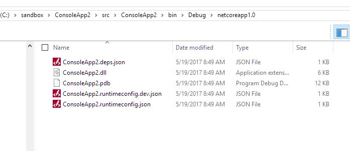
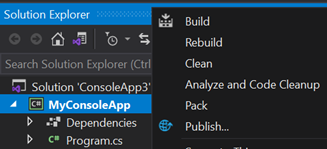
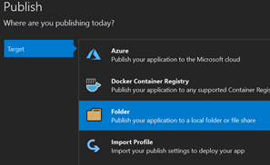
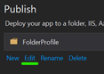
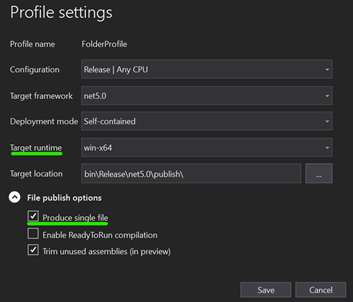
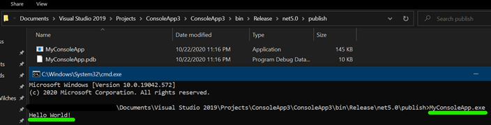

Build .NET Core console application to output an EXE
For a console application project targeting .NET Core 1.0, I cannot figure out how to get an .exe to output during build. The project runs fine in debug.
I've tried publishing the project, but that does not work either. It makes sense since an EXE file would be platform-specific, but there must be a way. My searches have only turned up reference to older .NET Core versions that used project.json.
Whenever I build or publish, this is all I get:

Answer
For debugging purposes, you can use the DLL file. You can run it using dotnet
ConsoleApp2.dll. If you want to generate an EXE file, you have to generate a
self-contained application.
To generate a self-contained application (EXE in Windows), you must specify the target runtime (which is specific to the operating system you target).
Pre-.NET Core 2.0 only : First, add the runtime identifier of the target runtimes in the .csproj file (list of supported RIDs):
<PropertyGroup> <RuntimeIdentifiers>win10-x64;ubuntu.16.10-x64</RuntimeIdentifiers> </PropertyGroup>
The above step is no longer required starting with .NET Core 2.0.
Then, set the desired runtime when you publish your application:
dotnet publish -c Release -r win10-x64 dotnet publish -c Release -r ubuntu.16.10-x64
Suggest
UPDATE: FEB2022 The below still holds for .NET 6
UPDATE for .NET 5!
The below applies on/after NOV2020 when .NET 5 is officially out.
(see quick terminology section below, not just the How-to's)
How-To (CLI)
Pre-requisites
- Download latest version of the .net 5 SDK. Link
Steps
-
Open a terminal (e.g: bash, command prompt, powershell) and in the same directory as your .csproj file enter the below command:
dotnet publish --output "{any directory}" --runtime {runtime} --configuration {Debug|Release} -p:PublishSingleFile={true|false} -p:PublishTrimmed={true|false} --self-contained {true|false}
example:
dotnet publish --output "c:/temp/myapp" --runtime win-x64 --configuration Release -p:PublishSingleFile=true -p:PublishTrimmed=true --self-contained true
How-To (GUI)
Pre-requisites
- If reading pre NOV2020: Latest version of Visual Studio Preview*
- If reading NOV2020+: Latest version of Visual Studio*
*In above 2 cases, the latest .net5 SDK will be automatically installed on your PC.
Steps
-
Right-Click on Project, and click Publish
 -
Click Start and choose Folder target, click next and choose Folder 
-
Enter any folder location, and click Finish
-
Click on Edit
 -
Choose a Target Runtime and tick on Produce Single File and save.* 
-
Click Publish
-
Open a terminal in the location you published your app, and run the .exe. Example: 
A little bit of terminology
Target Runtime
See the list of RID's
Deployment Mode
- Framework Dependent means a small .exe file produced but app assumed .Net 5 is installed on the host machine
- Self contained means a bigger .exe file because the .exe includes the framework but then you can run .exe on any machine, no need for .Net 5 to be pre-installed. NOTE: WHEN USING SELF CONTAINED, ADDITIONAL DEPENDENCIES (.dll's) WILL BE PRODUCED, NOT JUST THE .EXE
Enable ReadyToRun compilation
TLDR: it's .Net5's equivalent of Ahead of Time Compilation (AOT). Pre-compiled
to native code, app would usually boot up faster. App more performant (or
not!), depending on many factors. More info here
Trim unused assemblies
When set to true, dotnet will generate a very lean and small .exe and only
include what it needs. Be careful here. Example: when using reflection in your
app you probably don't want to set this flag to true.
Microsoft Doc